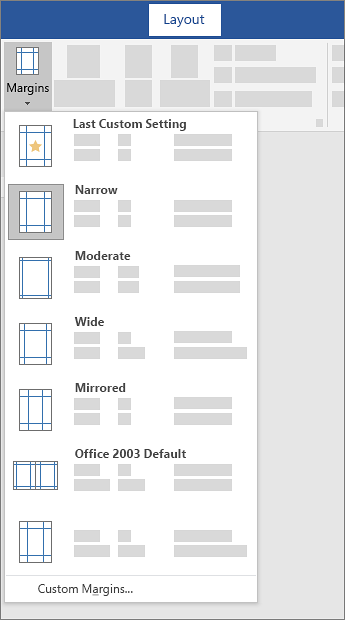

In Word, each page automatically has a one-inch margin. You can customize or choose predefined margin settings, set margins for facing pages, allow extra margin space to allow for document binding, and change how margins are measured.
-
Select Layout > Margins.
-
Select the margin configuration you want, or select Custom Margins to define your own margins.

Insert a page break:
Insert a page break
-
Put your cursor where you want one page to end and the next to begin.
-
Go to Insert > Page Break.